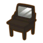

Taller de Nigel - Taller de carpintería


El taller de carpintería está dirigido está dirigido por Nigel. Está ubicado en la esquina de la calle principal del distrito bajo, frente al Supermercado, en el distrito bajo de la ciudad. Puede solicitar mejoras y materiales para la vivienda aquí y, a medida que coseche más cultivos, se almacenarán más ingredientes. Una vez que se reparen las instalaciones deterioradas de la granja, estarán disponibles para su compra en la tienda. La tienda también ofrece mejoras para la casa, así que reúne materiales y pregúntale a Nigel cuándo quieres agrandar tu casa.
| Horas | 8:00 am - 6:00 pm. |
|---|---|
| Cerrado | Miércoles y dias festivos. |
| Residentes | Nigel y Ralph. |
| Dirigido por | Nigel (Maestro carpintero). |
Las obras de Nigel
Edificios agrícolas
| Construcción | Precio | Dimención | Requisito de desbloqueo |
|---|---|---|---|
 Pozo |
1.000 G | 2X2 | Desde el inicio |
 Gallinero |
3.000 G | 5X6 | Reparar un gallinero en ruinas. |
 Granja |
5.000 G | 5X6 | Reparar una granja en ruinas. |
 Silo |
6.000 G | 3X3 | Reparar un silo en ruinas. |
 Tronco de setas |
2.500 G | 2X2 | Reparar un tronco de setas en ruinas. |
 Colmena |
4.000 G | 2X2 | Reparar un colmena en ruinas. |
 Establo |
15.000 G | 4X4 | Reparar un establo en ruinas. |
Mejoras en los edificios agrícolas
Las mejoras de los edificios no se aplican ensima de los edificios, se considera como otro edificio, es decir que puede tener tanto la vercion normal como la grande del mismo edificio en tu granja.
| Construcción | Materiales requerido | Precio | Dimención | Requisito de desbloqueo |
|---|---|---|---|---|
 Gallinero Grande |
 10 Madera robusta  10 Lingote de plata  50 Hierba flexible |
3.000 G | 6X6 | Reparar un gallinero en ruinas. |
 Granja Grande |
 10 Madera flexible  10 Lingote de oro  50 Hierba resistente |
5.000 G | 6X6 | Reparar una granja en ruinas. |
 Silo Grande |
 20 Ladrillo 5 Lingote de oro |
6.000 G | 3X3 | Reparar un silo en ruinas. |
Mejoras de la casa
| Construcción | Materiales requerido | Precio | Requisito de desbloqueo |
|---|---|---|---|
 Cabaña de madera |
 10 Madera |
2.000 G | Desde el inicio |
 Casa pequeña |
30 Madera 30 Madera robusta  30 Lingote de hierro 30 Lingote de plata |
30.000 G | Tener la cabaña de madera. |
 Casa Grande |
60 Madera flexible  60 Madera recia 40 Lingote de plata 40 Lingote de oro |
100.000 G | Tener la Casa pequeña. |
 Hermosa casa |
120 Madera recia  60 Madera quimera 80 Lingote de oro  20 Lingote de oricalco |
100.000 G | Tener la Casa pequeña. |
Muebles
El desarrollo de la ciudad esta dirigido en el ayuntamiento y para subir de nivel el jugador debe ircompletando misiones que el mismo ayuntamienta entrega.
| Muebles | Precio | Requisito de desbloqueo |
|---|---|---|
 Silla elegante |
3.000 G | Desde el inicio |
 Sofá espléndido |
6.000 G | Desarrollo de la ciudad en Lv.5 o superior |
 Sofá cómodo |
15.000 G | Desarrollo de la ciudad en Lv.6 o superior |
 Mesa grande |
8.000 G | Desde el inicio |
 Mesa redonda grande |
8.000 G | Desde el inicio |
 Estante para libros |
10.000 G | Desde el inicio |
 Armario |
15.000 G | Desarrollo de la ciudad en Lv.7 o superior |
 Tocador |
20.000 G | Desarrollo de la ciudad en Lv.8 o superior |
 Lampara de papel |
3.000 G | Desde el inicio |
 Pantalla oriental |
5.000 G | Desde el inicio |